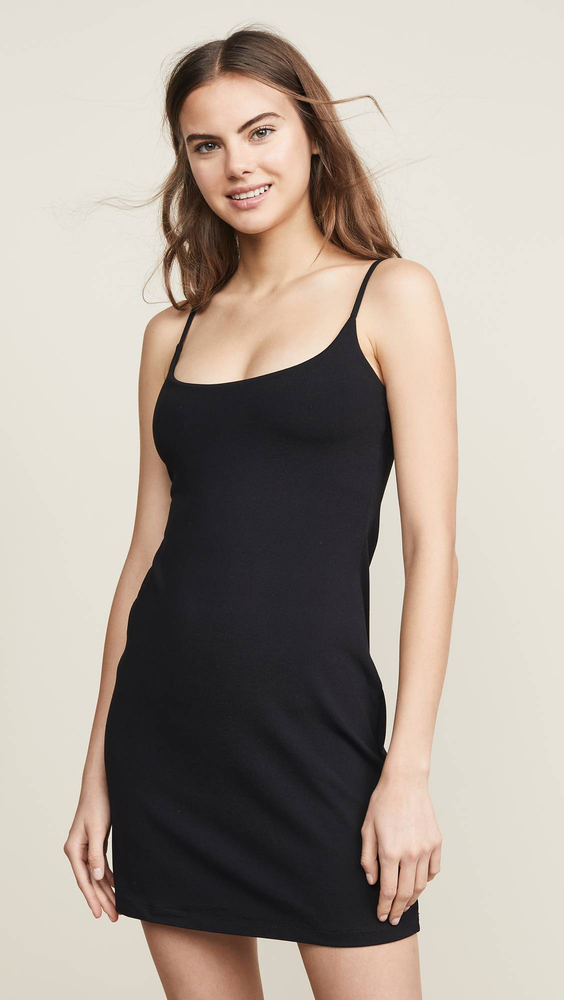

The youth-oriented culture of the "Smells Like Teen Spirit" decade was fertile ground for grunge to take hold, as it did following Marc Jacobs's groundbreaking S/S 93 collection for Perry Ellis (and the Vogue spread that followed). Teens and 20-somethings embraced baggy flannels and floral prints—and still today snap them up in vintage stores. Elsewhere, minimalism became big news in fashion, with slip dresses, sheer fabrics, and a palette of black, gray, and white ruling the runways. Finally, hip-hop's influence extended to the mainstream, with the MTV generation copying looks they saw on artists like TLC, Aaliyah, and Salt-N-Pepa.
Here
